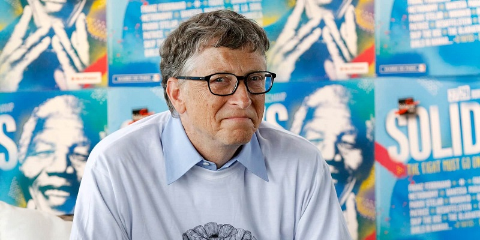

Bill Gates là một ông trùm kinh doanh và lập trình viên máy tính người Mỹ, là người đồng sáng lập Microsoft, công ty phần mềm PC lớn nhất thế giới. Kể từ khi thành lập công ty vào năm 1975, Gates đã giữ một số vị trí trong đó có các vị trí của chủ tịch, CEO và kiến trúc sư trưởng phần mềm.
Là một trong những doanh nhân nổi tiếng nhất của cuộc cách mạng máy tính cá nhân, ông luôn được xếp hạng trong số những người giàu nhất thế giới bắt đầu từ năm 1987.
Ông là chủ tịch kiêm kiến trúc sư của Công ty phần mềm Microsoft. Đây là một phần mềm có tính bước ngoặt khi đã mở ra một công nghiệp mang tính cá nhân quy mô lớn. Sự thành công của Microsoft không chỉ mang đến một "diện mạo" mới cho thế giới mà còn biến Bill Gates trở thành một trong những tỷ phú quyền lực bậc nhất.
Ngay từ khi còn trẻ. Bill Gates đã thể hiện bản thân là một người có hoài bão và bản lĩnh lớn. Ông phát triển ra đam mê máy tính của mình từ rất sớm, khi ông bắt đầu học tại Lakeside School vào năm 13 tuổi. Thậm chí, ông đã có thể viết được chương trình phần mềm ngay trên chiếc máy tính ở trường. Bước vào năm sơ trung, Bill Gates cùng những người bạn khác còn táo bạo hơn khi vi tính hóa hệ thống bảng lương của trường Berkshire Hathaway.
Năm 17 tuổi, Bill Gates chính thức nghiêm túc với việc đầu tư chất xám vào công nghệ thông tin. Ông hợp tác với Paul Allen, một tiền bối từng học chung tại tiểu học để thành lập một liên doanh là Traf – O – Data. Theo đó, ông tiến hành xây dựng các bộ đếm giao thông dựa trên hoạt động của bộ xử lý Intel 2008.
Đam mê máy tính nhưng thành tích học vị tỷ phú này cũng vô cùng đáng nể. Năm 1973, Bill Gates tham gia kì thi SAT với tổng điểm là 1.590/1.600, mang cương vị là Học giả Quốc Gia. Với mức điểm này, ông đỗ vào Đại học Harvard danh tiếng. Tuy nhiên niềm đam mê máy tính quá lớn khiến ông không còn hứng thú với các môn học trên trường. Ông quyết định bỏ học và cùng với người bạn là Paul Allen khởi nghiệp. Quyết tính tưởng như mang đến nhiều rủi ro này lại làm tiền đề mang đến sự thành công lẫy lừng và mở ra một trang sử phát triển mới cho nhân loại của Bill Gates.
Sau khi rời khỏi trường đại học, tháng 4/1975, Bill Gates đã cùng Paul Allen thành lập lên Microsoft. Đế năm 1989, Bill Gates đã viết mã chương trình thành công cho công ty phần mềm của mình. Xuyên suốt từ năm 1985 đến 1995. Microsoft bước vào thời kỳ đỉnh cao và có sự phát triển vững mạnh, đưa ra thị trường nhiều phần mềm có tính ứng dụng cao.
Theo thông tin được tiết lộ thì cứ 1 giây Bill Gates có thể kiếm được 250 USD tương đương 20tr USD 1 ngày và 7,8 tỷ USD mỗi năm
Nếu mỗi ngày Bill Gates tiêu hết 1tr USD thì ông phải mất 285 năm mới xài hết số tiền hiện có bây giờ
+)Năm 2002: Bill Gates và vợ là Melinda Gates được vinh danh tại giải thưởng trao cho dịch vụ cộng đồng vĩ đại nhất, mang đến lợi ích cho những người kém may mắn.
+)Năm 2006: Chính phủ Mexico trao tặng huân chương Đại bàng Aztec cho vợ chồng Bill Gates nhờ hoạt động từ thiện trong lĩnh vực y tế, giáo dục toàn cầu.
+)Năm 2010: Bill Gates Viện Franklin trao giải thưởng Bower nhằm ghi nhận thành tựu của ông dành cho Microsoft và các hoạt động từ thiện tiêu biểu khác.
+)Năm 2015: Vợ chồng Bill Gates được Ấn Độ Padma Bhushan trao danh tự dân sự cao thứ 3 trước những đóng góp gây quỹ tại đây.
+) Top 100 người có tầm ảnh hưởng nhất thế giới.
+) Top 50 người có ảnh hưởng đến công nghệ.
+) Nằm trong top 8 danh sách vinh danh những anh hùng của thời đại.